Lumo / Gadget marketplace
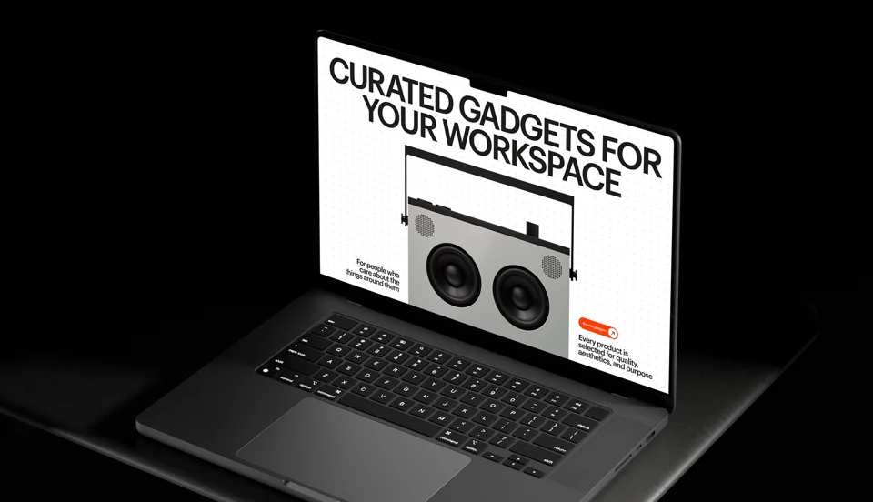
Project overview
Lumo is an online store offering a curated selection of workspace gadgets.
I designed the storefront to help customers browse the catalogue, explore products and understand how they were selected. The task was to make a small, carefully chosen range the reason to shop there.
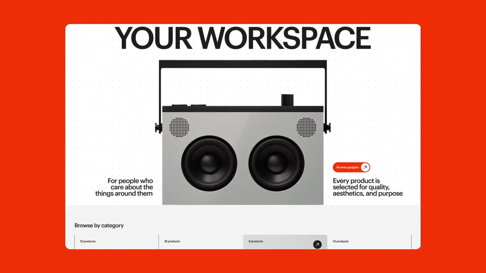
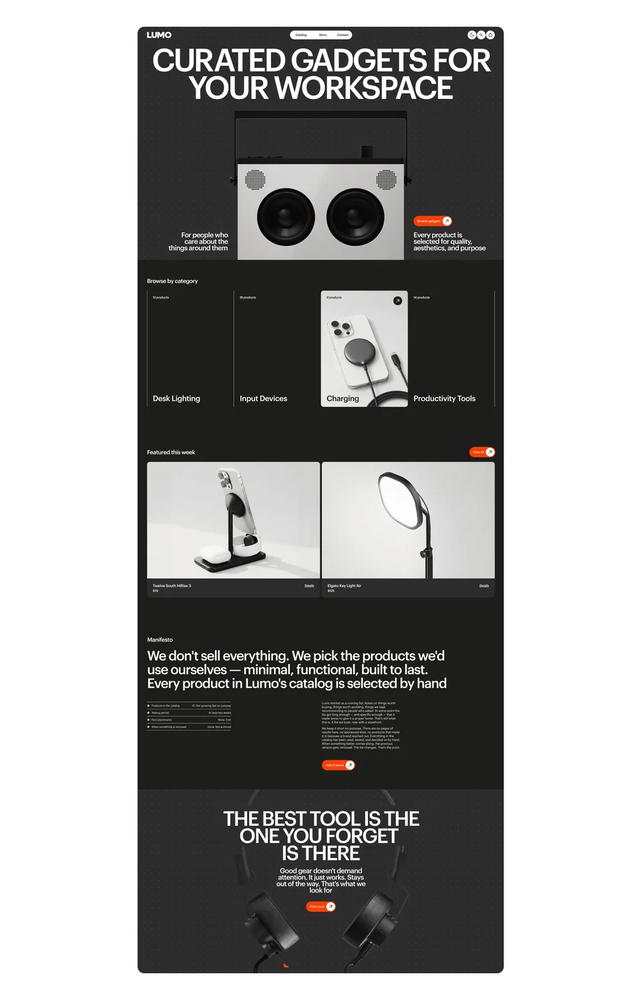
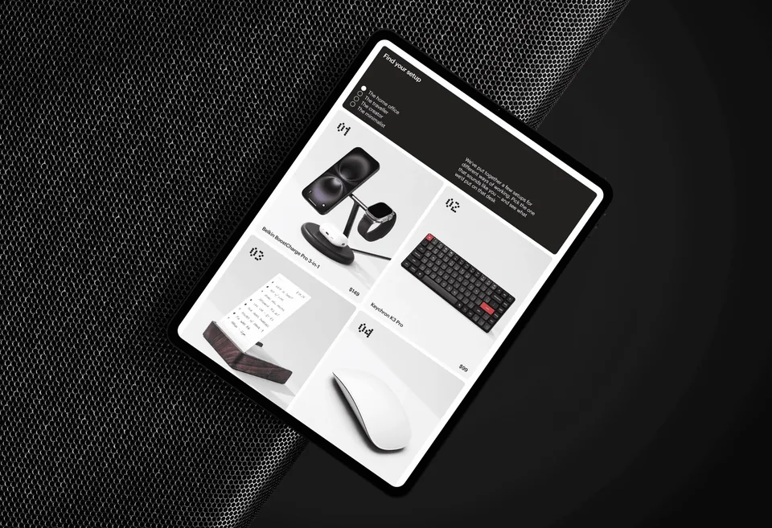
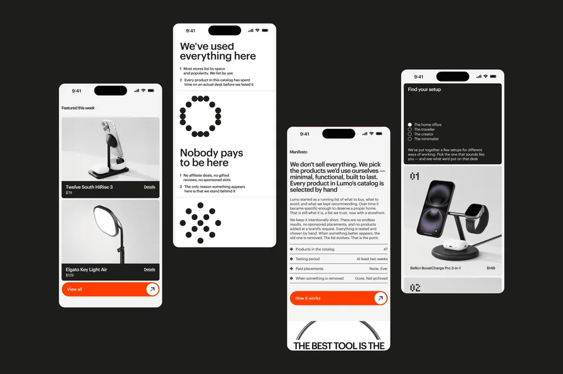
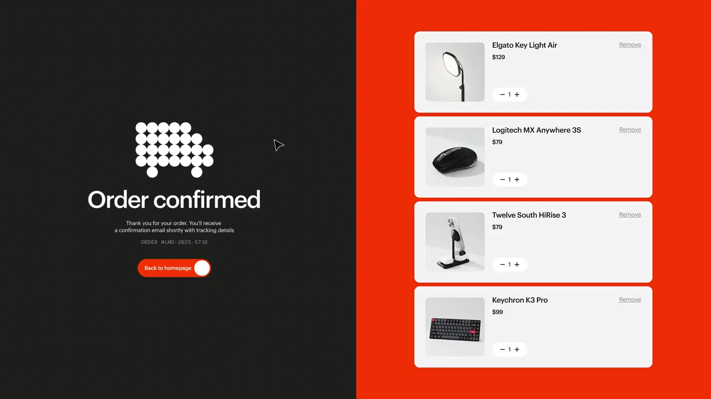
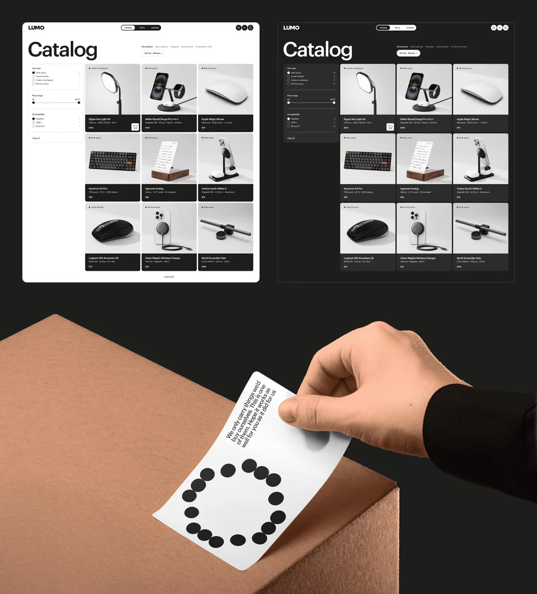
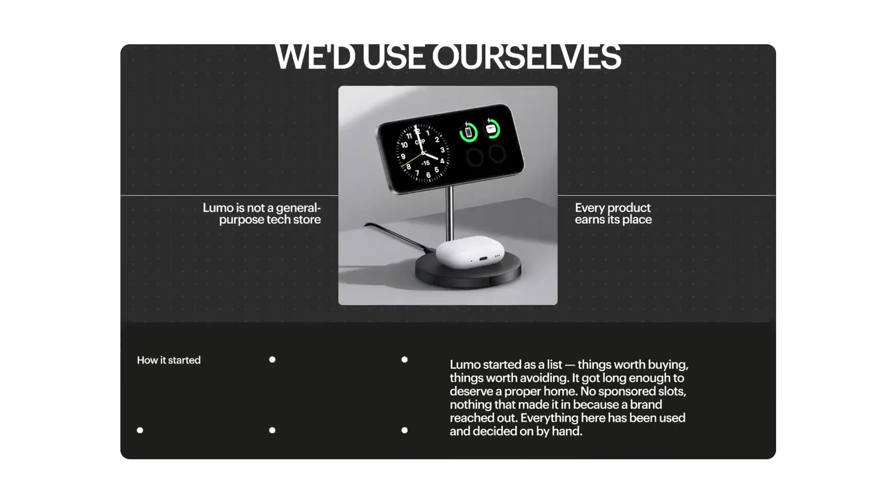
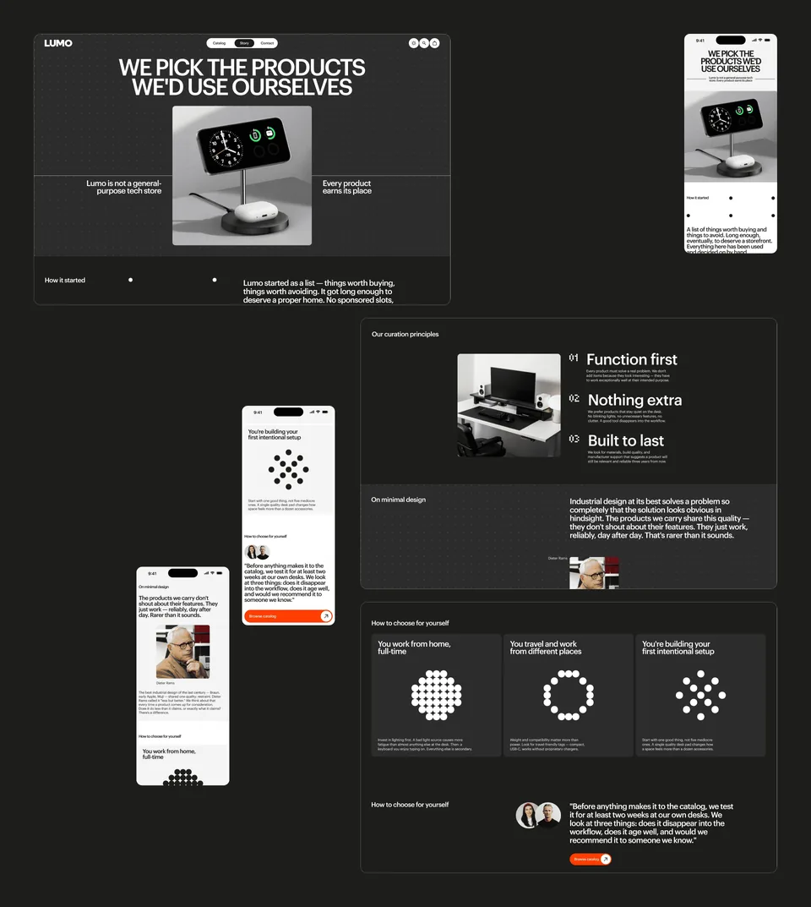
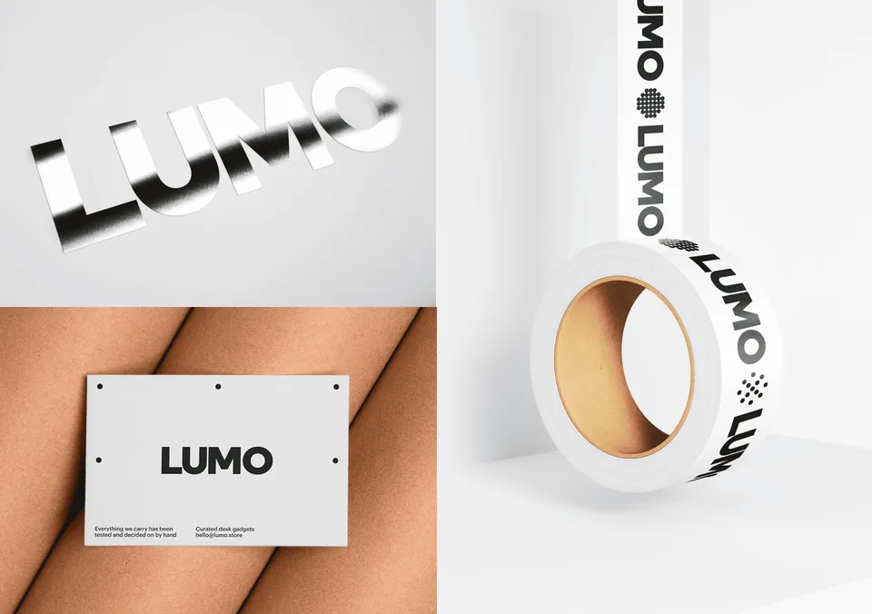
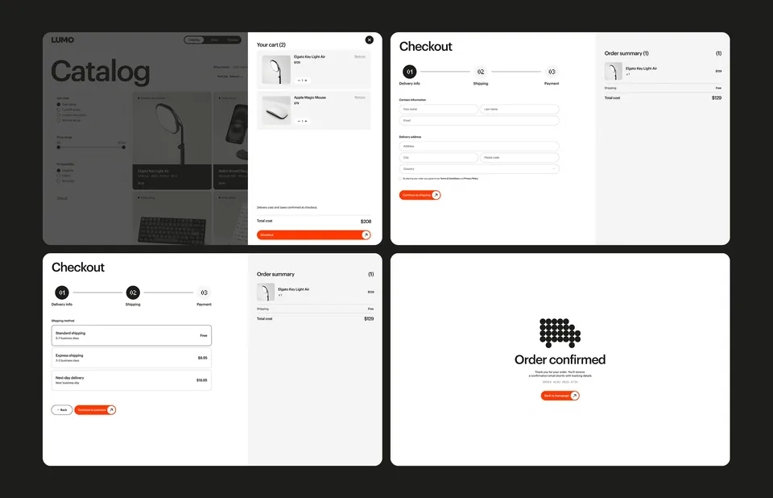
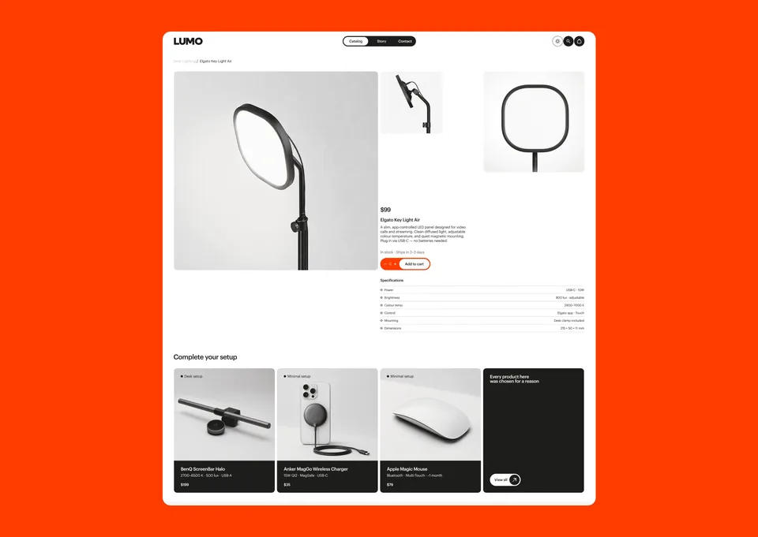
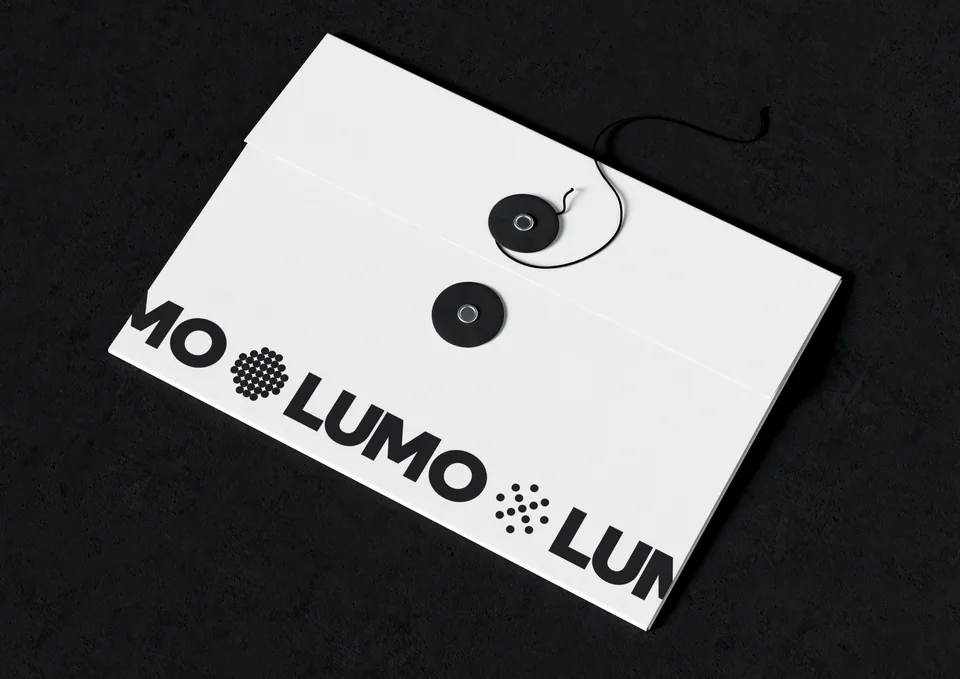